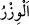
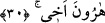

29. Bana ailemden bir de vezir (yardımcı) ver,
“Bana âilemden bir vezir ver,” Vezir; padışahın padişahlık yükünü taşıyan ve görüşü
ile ona yardım eden yakın ve özel arkadaştır. Nitekim el-Kâmûs’ta böyle geçmektedir.
Vezir kelimesi yük/ağırlık mânâsına gelen “
” kelimesinden türemiştir. Çünkü vezir
padişahın yükünü taşıyan kişidir. Ya da “
” kelimesinden türemiştir. Bu kelime
sığınak ve tutunulan şey mânâsına gelir. Çünkü padişah onun görüşüne sarılır ve
işlerinde vezire sığınır. Ayetin mânâsı, ‘Bana yüklediğin ağır görevi yerine getirmede
bana yardımcı olacak bir vezir ver.’ demektir.
Bu vezir ehlimden; yakın ve akrabalarımdan olsun. “
” bir şeyin kendisine nisbet
edildiği en seçkin yakınlarıdır. Âyette de “Muhakkak oğlum benim ehlimdendir.”
(Hûd, 45/11) buyrulmuştur. Ehlüllah Allâh’ın seçkin kullarıdır (hâssa). Nitekim bir
hadiste şöyle buyrulmuştur: “Allâh’ın insanlar arasında ehli vardır. Kur’an ehli, işte
onlar Allâh’ın ehlidir.”[71] Bu rivâyet el-Makâsıdü’l-hasene’de geçmektedir.
30. Kardeşim Hârun’u.
“Kardeşim Hârun’u” bana yardım etmek üzere vezir olarak ver. Çünkü Mûsâ’nın
esas maksadı kendine bir vezir istemektir.
31. Onun sayesinde arkamı kuvvetlendir.
Yani kuvvetimi onunla pekiştir veya sırtımı onunla kuvvetlendir.”
32. Ve onu işime ortak kıl.
Gerektiği gibi risâlet görevini yerine getirmem için onu bana bu görevde ortak kıl ki
birbirimize yardım edelim.
Eğer “Hz. Mûsâ nasıl olur da kardeşi için peygamberlik ister? “Allah
peygamberliğini kime vereceğini daha iyi bilir.” (el-En’âm, 6/124) âyetinde